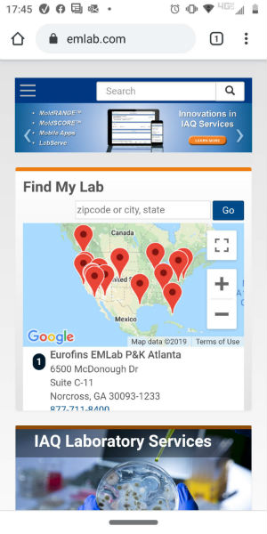

PARC: Proximity
Walmart
Walmart's website demonstrates the principle of proximity very well. You can see that in the way they group the text and images for each topic in close proximity to each other. This creates connections between those elements and shows a distinction between the different sections of the website. Employing this design principle makes the website easy to navigate and improves the user's experience with their search for items.
PARC: Repetition
Eurofins EMLab P&K
EMLab P&K's website demonstrates the principle of repetition by repeating the search bar in the header throughout the website. They also place a different image under the search bar for each page relating to the content on that page. On their menu screens they place their selections in boxes similiar in size and design, making the site very uniform and easy to navigate. This repetition provides consistency in the site and unifies the site's design. I find this site to be visually appealing and easy to understand.
White Space and Clean Design
YouTube

YouTube's website demonstrates an effective use of white space in its design by not crowding content into every available space. They have space and padding around the different elements of the page, opening it up and improving readability and increasing the user's experience with finding what they are looking for. YouTube also doesn't overly use white space, which would make the site seem empty and would cause more scrolling to find the videos for which you are looking.